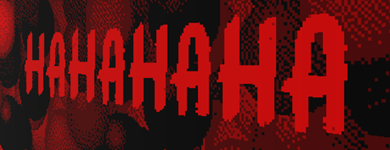

"Laugher" is the Exit Map replacement in "Freddo's Awsome Math Game!"(/"FAMG").
Aliases
Laugher, HA, HAHAHAHA, Laugh.
Appearance
Laugher appears as yellow text that reads; "HAHAHAHA".
Gallery

Trivia
- Laugher is able to block exits.
Return to Main Page